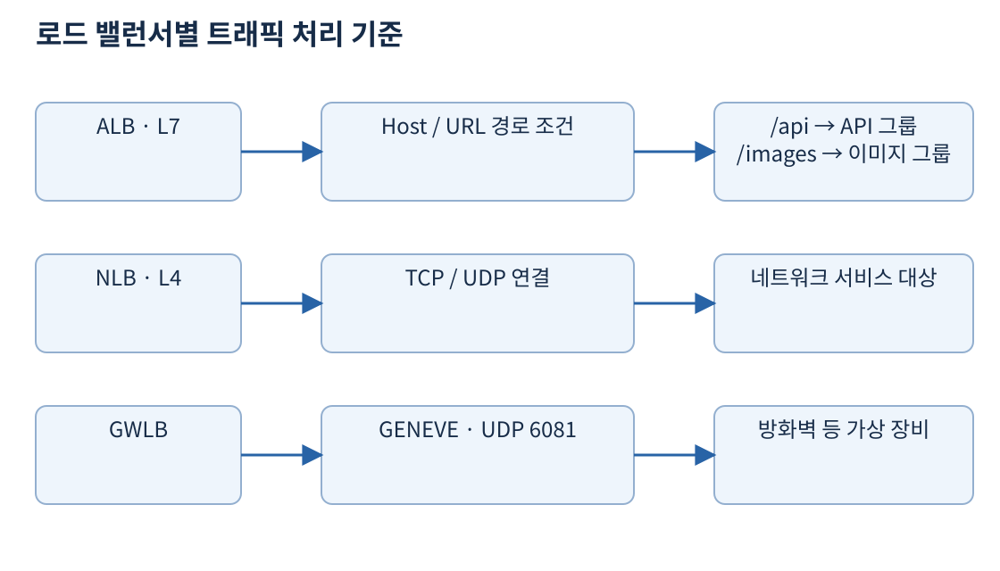
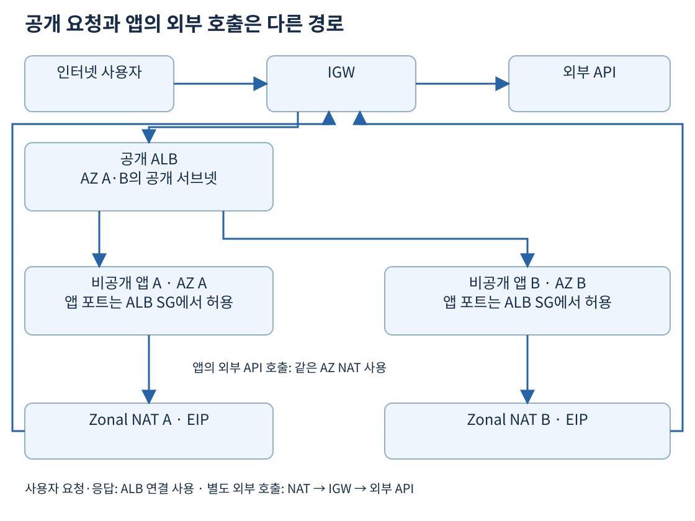
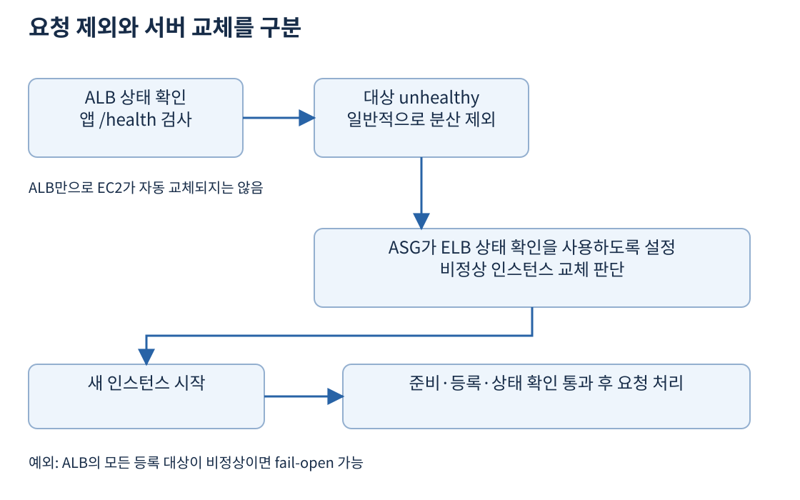

쇼핑몰 앱을 EC2 한 대에서 운영하면 서버 장애와 주문 증가가 같은 서버에 집중된다. 더 큰 서버로 바꾸면 처리량을 늘릴 수 있지만 그 한 대가 멈추는 문제는 남는다. 여러 서버에 요청을 나누고 실패한 서버를 교체하며 수요에 맞춰 대수를 바꾸는 기능을 조합해야 한다.
Elastic Load Balancing은 들어오는 요청을 등록된 대상에 나누는 서비스다. EC2 Auto Scaling은 필요한 인스턴스 수를 유지하고 조건에 따라 대수를 조절한다. 로드 밸런서만 만들면 EC2가 자동으로 늘어나는 것이 아니며, Auto Scaling 그룹만 만들면 사용자에게 하나의 웹 진입 주소가 자동 제공되는 것도 아니다.
| 구성 요소 | 담당하는 일 | 직접 해결하지 않는 일 |
|---|---|---|
| 로드 밸런서 | 요청 분산, 대상 상태 확인 | 앱 EC2 수의 자동 조절 |
| Auto Scaling 그룹 | 인스턴스 수 유지·확장·교체 | 앱의 DB 병목 제거 |
| 여러 AZ | AZ 단위 장애 영향 분산 | 리전 전체 장애 복구 |
| 외부 상태 저장소 | 서버 간 세션·데이터 공유 | 저장소 자체의 모든 장애 방지 |
출처: Elastic Load Balancing 개요, EC2 Auto Scaling 개요
| 유형 | 요청을 해석하는 수준 | 대표 요구 |
|---|---|---|
| Application Load Balancer | HTTP·HTTPS의 애플리케이션 계층, L7 | 호스트·URL 경로별 웹 요청 분기 |
| Network Load Balancer | TCP·UDP 등 전송 계층, L4 | TCP 서비스, UDP 서비스, AZ별 고정 IP 요구 |
| Gateway Load Balancer | 네트워크 장비로 트래픽 전달 | 방화벽·침입 탐지 같은 가상 어플라이언스 확장 |
ALB는 shop.example.com과 admin.example.com처럼 Host 헤더로 대상을 다르게 고를 수 있다. 같은 사이트에서도 /images/*는 이미지 서버 그룹, /api/*는 API 서버 그룹으로 보낼 수 있다. 리스너는 받아들일 프로토콜과 포트를 정하고, 리스너 규칙은 요청의 조건과 처리 방법을 정한다. 대상 그룹은 요청을 보낼 서버 집합과 상태 확인 설정을 묶는다.

NLB는 HTTP 경로를 보고 /api와 /images를 나누는 용도로 고르지 않는다. TCP나 UDP 기반 애플리케이션, 네트워크 성능과 고정 주소 요구를 검토할 때 적합하다. NLB는 TLS 리스너도 지원하므로 “HTTPS를 사용하면 무조건 ALB”라고 외우지는 않는다. TLS를 어디서 종료하고 어떤 계층의 조건으로 분기할지가 선택 기준이다.
GWLB는 보안 장비를 통과하는 트래픽을 여러 장비에 분산한다. 장비와는 GENEVE 캡슐화, UDP 6081을 사용한다. 웹 경로별 라우팅을 제공하는 ALB와 역할이 다르며 장비가 GENEVE 통신을 처리할 수 있어야 한다. Gateway Load Balancer Endpoint는 이 검사 경로를 연결하는 구성 요소다. 5일 차의 S3 Gateway Endpoint와 이름이 비슷해도 같은 기능은 아니다.
출처: ALB, NLB, GWLB와 GENEVE
인터넷 사용자가 접속하는 ALB는 internet-facing으로 만들고 여러 AZ의 공개 서브넷을 선택한다. 대상 EC2는 비공개 서브넷에 둘 수 있다. ALB가 대상의 프라이빗 주소로 연결하므로 앱 서버에 퍼블릭 IP가 필요하지 않다. 앱 SG는 ALB SG에서 오는 앱 포트만 허용하고, ALB SG는 사용자의 HTTPS와 대상·상태 확인에 필요한 통신을 허용한다.

그림의 NAT는 AZ별로 배치한 Zonal 모드다. 이 그림의 사용자 요청은 사용자 → IGW → ALB → 앱으로 간다. 앱이 사용자의 요청에 답할 때는 ALB가 만든 연결을 통해 응답한다. 그 응답을 NAT로 보내는 구조가 아니다. 앱이 별도로 외부 결제 API를 호출할 때는 앱 → NAT → IGW → 외부 API 경로를 사용한다. ALB와 NAT는 각각 들어오는 서비스 요청과 앱이 시작하는 외부 연결을 담당한다.
내부 서비스만 사용하는 로드 밸런서는 internal 유형을 검토한다. Internal 로드 밸런서는 사설 주소를 사용하며 VPC나 연결된 사설 네트워크에서 접근하도록 구성한다. Internet-facing 여부와 ALB·NLB 종류는 다른 축의 설정이다.
다중 AZ 로드 밸런서라도 실제 대상이 한 AZ에만 몰려 있으면 그 AZ 장애 때 서비스가 어려워진다. 활성 AZ별 대상 수와 남은 AZ의 처리 여유를 함께 살펴야 한다. Cross-zone 분산의 기본값과 변경 가능 범위는 로드 밸런서 종류·대상 그룹에 따라 다르므로 “모든 유형이 항상 다른 AZ까지 같은 비율로 분산한다”는 가정을 두지 않는다.
출처: 로드 밸런서의 스킴·AZ·요청 경로, ALB 서브넷 요구
ALB는 대상 그룹에 설정된 포트와 경로로 주기적으로 상태를 확인한다. /health가 허용된 성공 코드를 반환하는지 같은 기준을 사용한다. 단순히 EC2 운영체제가 살아 있다는 사실과 앱이 주문 요청을 처리할 수 있다는 사실은 다르다. EC2 시스템 검사를 통과해도 앱 프로세스가 멈췄을 수 있다.
| 판단 | 담당 기능 | 이후 동작 |
|---|---|---|
| 이 대상에 요청을 보내도 되는가 | 로드 밸런서 상태 확인 | 일반적으로 비정상 대상에 대한 분산 중단 |
| 그룹에 건강한 인스턴스가 필요한 수만큼 있는가 | Auto Scaling 상태 확인 | 비정상 인스턴스 교체 |
| 부하를 감당할 용량이 충분한가 | 확장 정책 | 목표 용량 증가·감소 |
로드 밸런서가 대상을 unhealthy로 표시했다고 언제나 ASG가 교체하는 것은 아니다. ASG가 ELB 상태 확인을 사용하도록 설정해야 그 상태를 교체 판단에 반영한다. 기본 EC2 상태 확인만 쓰면 앱 장애를 충분히 감지하지 못할 수 있다.

상태 확인 경로가 로그인 페이지로 리디렉션되거나 SG에서 막혀도 비정상 판정이 난다. 새 인스턴스가 앱을 준비하는 시간에는 health check grace period를 고려한다. 단, grace period가 있다고 로드 밸런서가 준비 안 된 서버에 요청을 보내야 하는 것은 아니다. 로드 밸런서는 자신의 상태 확인을 수행한다.
또한 ALB 대상 그룹의 등록 대상이 전부 비정상이면 fail-open 동작으로 그 대상들에게 요청을 보낼 수 있다. “비정상 대상에는 어떤 상황에서도 절대 요청하지 않는다”는 보장은 아니다. 전체 장애를 상태 확인만으로 안전하게 차단한다고 가정하지 말고 장애 응답과 알림을 함께 설계한다.
출처: ALB 상태 확인·전체 비정상 예외, Auto Scaling 상태 확인, 상태 확인 유예 기간
Auto Scaling Group, ASG는 실행 템플릿에 지정한 AMI·인스턴스 유형·보안 그룹 등을 이용해 EC2를 시작한다. 여러 AZ의 서브넷을 지정하면 그룹이 그 AZ들에 인스턴스를 분산하도록 구성할 수 있다. 목표 대수를 유지하는 것과 AZ별 실제 배치가 적절한지는 함께 살펴야 한다.
| 설정 예 | 의미 |
|---|---|
| Minimum = 2 | 정상 운영에서 유지할 최소 용량 |
| Desired = 4 | 현재 그룹이 맞추려는 목표 용량 |
| Maximum = 8 | 확장 정책이 사용할 수 있는 최대 용량 |
보통 인스턴스 수 기준으로 이해할 수 있지만 가중 용량 등을 쓰는 구성에서는 용량 단위가 단순 대수와 다를 수 있다. 위 예는 동일한 크기의 서버 대수를 가정한다. 목표 4대 중 한 대가 장애 나면 그룹은 대체 인스턴스를 시작해 목표를 맞춘다. 사용자가 몰리면 정책이 목표를 6으로 바꿀 수 있다. 최대가 8이라고 처음부터 8대를 실행하는 것은 아니다.
목표를 높여도 실제 EC2 용량, 계정 할당량, 서브넷 IP가 부족하면 시작에 실패할 수 있다. 장애 시 사용할 AZ의 용량을 확보하는 요구에는 2일 차의 용량 예약도 연결된다. 할인 약정을 샀다는 이유만으로 장애 때 새 서버를 바로 실행할 수 있는 것은 아니다.
출처: ASG 최소·최대·목표, 실행 템플릿
| 방식 | 동작 예 | 적합한 조건 |
|---|---|---|
| Target tracking | 평균 CPU 목표에 맞춰 용량 조절 | 부하와 서버 수의 관계가 예측 가능 |
| Step scaling | 경보 초과 정도별로 추가 대수 변경 | 부하 급증 수준에 따른 제어 필요 |
| Scheduled scaling | 매일 행사 시작 전에 목표 용량 증가 | 부하 시점을 알고 있음 |
| Predictive scaling | 과거 부하 패턴으로 미래 용량 예측 | 반복되는 패턴과 준비 시간 필요 |
Target tracking의 지표는 서버를 늘리면 서버당 부하가 줄어드는 관계를 가져야 한다. 단순 전체 요청 수처럼 서버 수에 비례해 감소하지 않는 값을 무조건 목표 추적에 쓰지 않는다. CPU가 낮아도 DB 대기나 네트워크가 병목이면 CPU만으로 적절히 확장하지 못한다. 요청 수/대상이나 큐의 작업 수/처리자 같은 단위당 지표를 요구에 맞게 검토한다.
Scheduled는 지정한 시각에 따른 조절이고 Predictive는 과거 패턴에 따른 예측이다. 갑작스러운 신제품 흥행처럼 과거에 없던 부하를 예측이 항상 맞히지는 못한다. 예측으로 미리 준비하고 동적 정책으로 실제 변화에 대응하도록 조합할 수 있다. 새 서버가 부팅하고 캐시를 준비하는 동안 지표가 왜곡되지 않도록 instance warmup도 고려한다.
출처: 동적 확장, 목표 추적 지표 선택, 예약 확장, 예측 확장, Warmup
수직 확장은 서버의 CPU·메모리를 더 큰 사양으로 바꾸는 것이다. 앱 수정이 적을 수 있지만 변경 시 중단이 필요할 수 있고 한 대의 크기에는 한계가 있다. 수평 확장은 서버 대수를 늘린다. 장애를 분산하고 부하에 맞춰 대수를 조절하기 좋지만 요청이 어느 서버로 가도 처리할 수 있어야 한다.
로그인 세션을 EC2 A의 RAM에만 저장하면 다음 요청이 B에 도착했을 때 로그인 상태를 찾지 못한다. 세션을 ElastiCache나 DynamoDB 같은 외부 저장소로 옮기고 업로드 파일은 S3에 저장하면 앱 인스턴스를 교체하기 쉬워진다. 외부 저장소도 가용성·복제·만료 정책을 설계해야 한다. Stateless 앱은 데이터가 전혀 없다는 뜻이 아니라 인스턴스의 로컬 상태에 다음 요청을 의존시키지 않는다는 뜻이다.
ALB의 sticky session은 일정 조건에서 같은 클라이언트를 같은 대상에 보내도록 도울 수 있다. 하지만 대상이 죽으면 그 대상 RAM의 세션을 복원해 주지는 않는다. 수정할 수 없는 레거시 앱에서는 임시 호환책으로 검토하되 장애 시 재로그인·작업 재개 요구와 복구 절차를 확인한다. 공유 파일이 필요한 레거시 요구라면 EFS·FSx와 같은 저장소도 별도로 검토한다.
출처: Sticky session과 대상 그룹 속성, 확장 가능한 느슨한 결합 구조의 시험 범위
Immutable 배포는 운영 서버에 접속해 조금씩 수정하는 대신 새 버전의 이미지와 새 인스턴스를 만들어 교체하는 방식이다. 실행 템플릿의 AMI를 바꿨다고 기존 인스턴스가 즉시 전부 새 버전이 되는 것은 아니다. Instance refresh처럼 교체 절차를 실행하고 새 대상의 준비 상태를 확인한다.
Blue/green은 기존 환경과 새 환경을 나란히 준비하고 트래픽을 전환한다. 기존 환경을 남겨 되돌리기 쉬울 수 있지만 두 환경을 유지하는 동안 비용과 용량이 추가된다. DB 스키마 변경이 이전 버전과 호환되지 않으면 트래픽만 되돌려서는 복구되지 않는다. 변경을 서버 교체와 데이터 호환성으로 나눠 검토해야 한다.
출처: Immutable infrastructure, ASG Instance refresh
대기 환경을 작게 두었다가 장애 때 확장하려면 그 환경에서 EC2 할당량, IP 여유, 시작 시간, 대상 서비스 처리 한도를 확인해야 한다. 대기 서버가 존재한다는 사실과 정해진 시간 안에 전체 트래픽을 처리한다는 사실은 다르다. 실제 확장·전환 검증은 13일 차의 RTO와 이어진다.
처리 능력을 넘는 요청을 무제한 받아들이면 DB까지 연쇄 장애가 날 수 있다. Throttling은 허용할 요청량을 제한해 시스템을 보호하고 불필요한 처리·전송 비용을 줄인다. API Gateway의 제한 같은 진입 제어와 SQS로 작업을 버퍼링하는 구조를 요구에 맞게 검토한다. 요청을 거절할지 지연시킬지는 즉시 응답 요구와 업무 유효 기간에 따라 다르다.
일시적인 실패에 재시도하되 지수 백오프와 jitter로 간격을 늘리고 분산한다. 최대 시도 횟수와 전체 시간도 제한한다. 모든 클라이언트가 동시에 재시도하면 장애 서버에 더 큰 부하를 준다. 결제 같은 요청은 중복 실행을 막을 멱등성도 필요하다. 재시도는 이미 처리된 결제를 다시 실행해도 안전하다는 뜻이 아니다.
출처: 재시도 제한·백오프·Jitter, API Gateway throttling, 가용성·확장 요구
운영 주문 서비스는 두 AZ의 앱과 데이터 계층, AZ별 외부 출구, 남은 AZ의 용량을 검토한다. 개발용 임시 환경은 정해진 시간 외 중지하거나 더 작은 최소 용량을 적용할 수 있다. 다만 운영과 비운영의 가용성 요구가 다르다는 근거가 있어야 하며 낮춘 환경의 장애를 운영 수준으로 복구할 수 있다고 약속하지 않는다.
자동 확장이 비용을 무조건 줄이는 것도 아니다. 최소 용량을 과하게 잡거나 요청 급증에 최대 용량까지 늘린 뒤 줄어들지 않으면 비용이 증가한다. 서버 비용 외에 로드 밸런서 처리량, NAT 처리량, AZ 간 전송, 외부 저장소 비용을 함께 본다. 앱만 여러 AZ에 둬도 DB 한 대나 특정 AZ의 Zonal NAT 하나를 공유하는 구성이 단일 장애 지점으로 남을 수 있으므로 요청 경로 전체를 살핀다.
ALB에서 /api와 /api/ 아래만 API 대상으로 보내려면 path 값 /api, /api/*를 사용하고 나머지를 기본 대상으로 보낼 수 있다. /api*는 /apiv2도 포함한다. 규칙은 낮은 번호부터 처음 일치를 적용하므로 넓은 규칙을 앞에 두면 뒤의 구체적 규칙이 실행되지 않을 수 있다. Host와 path를 한 규칙에 두면 두 조건을 함께 만족해야 한다. 경로 조건은 경로 재작성 자체가 아니다.
기존·신규 대상 그룹에 가중치를 두면 일부 요청을 신규 버전에 보내는 canary를 구성할 수 있다. 하지만 신규 그룹 전체가 unhealthy여도 ALB가 그 가중치를 자동으로 기존 그룹에 넘기지는 않는다. 관찰 신호에 따라 가중치·리스너 규칙을 되돌리는 배포 제어가 필요하다. NLB UDP 서비스도 TCP·HTTP·HTTPS 상태 확인으로 준비 여부를 검사한다. TCP 소켓이 열린 것과 게임 처리 준비가 끝난 것은 다르므로 준비 상태를 반환하는 HTTP 경로가 더 적합할 수 있다.
Health grace는 초기화 중 성급한 ASG 교체를 늦추고 warmup은 새 인스턴스의 사용량이 확장 지표를 왜곡하지 않게 한다. 어느 것도 ALB의 준비 상태 확인을 대신하지 않는다. CPU가 낮은 큐 작업자는 API CPU보다 인스턴스당 적체량으로 확장해야 할 수 있다. 한 작업자가 하나씩 처리하고 처리 시간이 안정적이면 목표 적체량은 허용 대기 시간 / 평균 처리 시간, 현재 지표는 대기 메시지 수 / 처리자 수로 근사한다.
ALB 규칙·UDP 상태 확인·ASG 타이머·큐 계산·배포 심화에서 예시와 제약을 설명한다. 핵심은 요청 분산·교체·용량 조절의 역할 분리이며 weighted 분할의 실패 동작과 상세 상태 설정은 보충이다. ALB forward 제약, SQS 확장.
공식 자료 확인일: 2026-11-02